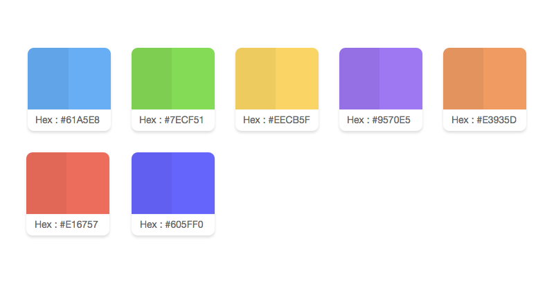
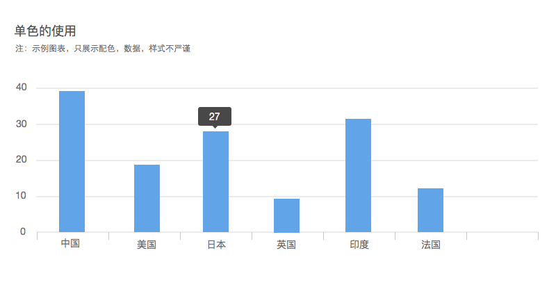
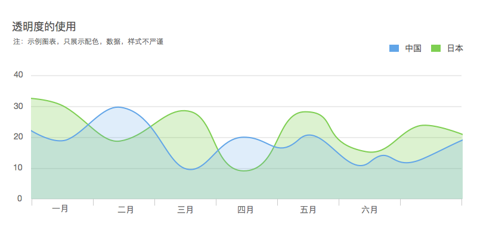
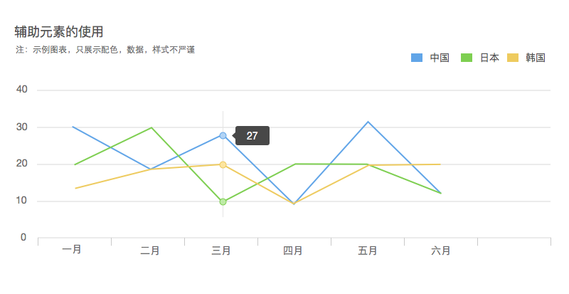

我们的生活中充满了颜色，人们之所以能看到各种颜色，主要是因为可见光的存在。光的实质是一种电磁波。但是整个波段中只有一小部分可以被我们人类眼睛识别。颜色是人的视觉系统对所接收到的光信号的一种主观的视觉感知。
这只是简单的把色彩理解成光，但是我们眼中的色彩还是存在差异化的，因为人类感知色彩的途径有很多种。
人对颜色的感知是一个主观的过程，大脑需要响应光对人体视锥细胞产生的刺激。
物体所呈现的颜色由物体的材料属性、光源中各种波长分布和人的心理认知所共同决定，因此存在个体差异。也就是说，不同的人对相同颜色的感知也可能是不一样的。
颜色的表示方法有很多，其中，色彩空间是描述使用一组值表示颜色的方法的抽象数学模型。常见的色彩空间包括RGB色彩空间、CMYK色彩空间和HSV/HSL色彩空间等。
RGB色彩空间采用笛卡尔坐标系定义颜色，三个轴分别对应红色(R)、绿色(G)、蓝色(B)三个分量。RGB色彩空间是迄今为止使用最为广泛的色彩空间，几乎所有的电子显示设备都在使用RGB色彩空间。而CMYK通常应用于印刷行业中。
HSV/HSL色彩空间遵循了人类的感知方式。人类对于颜色感知的方式通常包括三个问题：是什么颜色？深浅如何？明暗如何？在HSV色彩空间中，H指色相(Hue)，S指饱和度(Saturation)，V指明度(Value)，在HSL色彩空间中，L表示亮度(Lightness)。它们比RGB色彩空间更加直观且符合人类对颜色的语言描述。在1979年的ACM SIGGRAPH(美国计算机协会计算机图形学专业组)年度会议上，计算机图形学标准委员会推荐将HSL色彩空间用于颜色设计。
在我们制定的颜色使用原则中，采用了HSL色彩空间作为制定规则的参考依据。
颜色映射指的是颜色和数据值之间的映射关系，也就是对颜色进行可视化编码的过程。
从可视化编码的角度对颜色进行分析，可以将颜色分为色相、亮度和饱和度三个视觉通道。 色相本身不具有明显的顺序性，因此一般被用作定性的视觉通道。而亮度和饱和度可以被用作定量或定序的视觉通道。
针对不同类型的数据，我们通常也会选用不同的颜色映射方式。
在对有序型数据使用颜色映射时，应当利用亮度、饱和度这些量级视觉通道。在对类别型数据使用颜色映射时，应当利用色相这一定性通道。在某些情况下，若是已经通过其他方式编码了有序型数据的数值，也可以不使用亮度或饱和度来进行编码。问题在于，如果一旦使用了颜色映射，就应当遵循前面所说的规则。
我们提出了一些图表用色上的建议，希望能帮助更多人友好地使用图表颜色。这部分用色指南也会不断地完善和优化。
我们尝试给出了一个标准的配色方案，尽管这个标准方案不一定能满足所有的业务需求或是所有人的色彩感知。但是它在大多数情况下可以给你一些良好的建议和参考。
AntV 定义的七个标准颜色 
在使用单色就能表达数据意义的情况下，建议不使用多色。
单色相的使用：
在图表只展示单一属性的情况下，建议不要使用多种色相。
单明度和单饱和度的使用：
如果数据的数值已经通过形状、位置、角度等其他视觉通道进行了编码，那就没有必要再设置不同的亮度和饱和度。 
人们在不连续区域的情况下通常可以分辨6~12种不同色相，以及有限个可辨亮度层次。过多的颜色使用将对人类的视觉感知产生困扰。建议谨慎选择颜色的数量。
多色相的使用：
当图表展示了多种不同的属性时，建议用不同色相来区分不同属性。
多亮度与多饱和度的使用：
亮度和饱和度可以编码数据的顺序或数量特征。通常我们只会在特定图表内使用到多亮度或多饱和度，例如在一个“热力图”中，用不同亮度的红色来表示不同的气温测量值。
图表设计中的颜色使用必须统一，建议背景颜色不要选取与图表主体内容相同或相近的颜色。
在一个精心设计的图表中，背景颜色既要能良好地衬托图表主体，又不产生喧宾夺主的效果。
通常我们较多地使用白色、浅灰色作为背景颜色，有些情况下也会使用黑色。
透明度是与色相、亮度、饱和度紧密相关的另一个视觉通道。
由于透明度编码本身受亮度和饱和度编码的强烈影响，建议不要同时使用这三个视觉通道。但是它可以和色相编码一起使用。
通常使用透明度时，图表会有很多堆叠层次，我们需要做到使每一个前景层都能够在背景层之上良好地显示，并且不产生相互干扰。

辅助元素的配色需要避免与图表主体配色产生冲突。
在此基础上，尽量与图表主体配色统一。 
人群中存在一部分人具有视觉缺陷，包括色盲、色弱等。为了帮助他们识别图表，我们可能需要采取一些特殊方法。
一种可以实践的方法是在设计时通过软件模拟视觉缺陷人群的视觉感知，设计出安全的方案。这类功能在很多软件中都有，例如Adobe Photoshop和Adobe Illustrator等。另一种方法是，增加亮度和饱和度的变化，当然这是在这两者原本并未参与视觉编码的情况下。
很多人喜欢在数据图表上加入更多视觉表现，来让这个图表更加丰富。但是往往这样做导致信息传达不聚合，尽量避免这种情况产生。我们的目的主要是为了传达数据本身。
很多应用场景需要将数据展示到大屏幕上，传统的做法，希望在大屏幕上展示的时候颜色的饱和度越高越好。但是目前随着屏幕显示能力不断提高的情况下，其实选择一个贴近用户视觉的颜色更为合适。无论大屏幕还是小屏幕无非就是两点,1.让数据传达更清晰，2.让用户更友好的浏览。